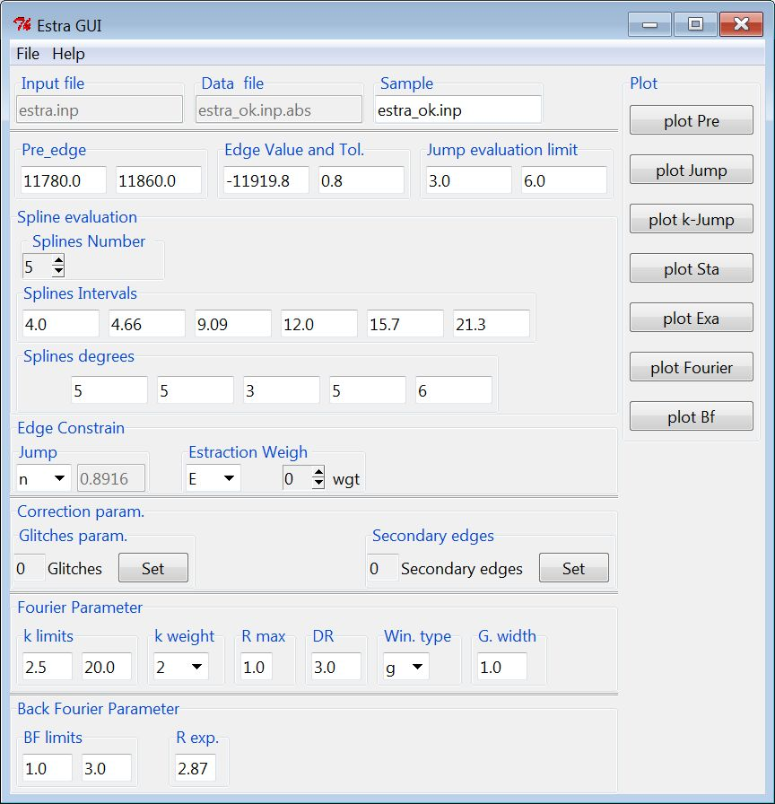
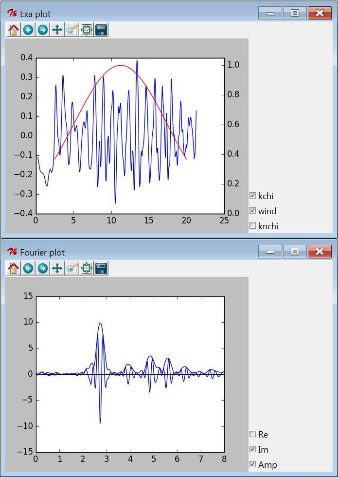

Estra and FitEXA
Estra and FitEXA are two programs for processing X-ray absorption spectroscopy data, extraction of extended X-ray absorption fine structure (EXAFS) signal, and EXAFS data analysis via least square refinement procedure (shell fitting). ESTRA and FitEXA propose useful options such as the analysis of the noise on the raw χ(k) data and a high flexibility in the choice of the model distribution function: harmonic, anharmonic (cumulants) and hard sphere models. The minimization routines underneath the FitEXA code allow ample choice/control of the non-linear minimization procedure and check of the correlation among the parameters. Further information could found here
Interfaces
Graphical User Interface are supplied in the releases Estra_GUI and FitEXA_GUI. The two program allow to easily create and edit input files and to visualize the results of the two program. Moreover a supplementary command EstraFitEXAlinecommand is supplied
Estra_GUI
Estra_GUI is composed by a main windows divided in two panes:the first at the right contain all the parameter necessary to the EXAFS signal extraction while the second contains the buttons that generate the different plots. To run the Estra program is sufficient to press , plot are automatically redraw at the end of the program. furthe information on the interface are shown in its help menu.
 
FitEXA_GUI
FitEXA_GUI shre the same visual aspect of Estra_GUI, however due to the intrinsic complexity of EXAFS analysis the first pane is composed by a notebook of three pages:
- Shell contains the k and R limits of the fit and the path used to fit
- Minuit Var. et Param define the parameter used to perform the fit and the minimization commands using the minuit syntax
- Minuit log shows the 'fitexafs.log' file generated by the program
Download
A release with self-installer is available for microsoft windows machines in the release page
Authors and Contributors
Carmelo Prestipino (@Prestipino), Carlo Meneghini (@cmeneghini),
Support or Contact
Having trouble with the codes? Please copy the text in the terminal windows (the black one) and drop an e-mail to the authors. a well defined question give an useful answer.